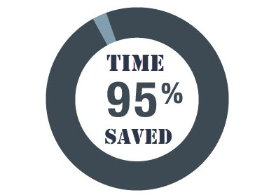

tidyCDISC is a shiny app to easily create custom tables and figures from ADaM-ish data sets.
Purpose
One of tidyCDISC’s goals is to develop clinical tables that meet table standards leveraged for submission filings, called “standard analyses”. However, this is secondary to the app’s primary purpose: providing rich exploratory capabilities for clinical studies. High-level features of the app allow users to produce customized tables using a point-and-click interface, examine trends in patient populations with dynamic figures, and supply visualizations that narrow in on a single patient profile.
The beauty of the application: users don’t have to write a lick of code to gather abundant insights from their study data. Thus, tidyCDISC aims to serve a large population of clinical personnel with varying levels of programming experience. For example:
A clinical head, with presumably no programming experience (but the most domain expertise) can explore results without asking a statistician or programmer to build tables & figures.
A statistician can use the application to make tables / figures instantly, cutting down on excess statistical programming requests for tables that aren’t required, but are “nice to see”.

- A statistical programmer can use
tidyCDISCto perform preliminary QC programming prior to writing their own code in a validated process. Users who leveragetidyCDISCfor routine trial analysis report significant time savings, about 95% on average, when performing their programming duties.
For a high-level overview of the app with brief 10-minute demo, please review the following presentation on tidyCDISCat Shiny Conf 2022:
Scope
As previously mentioned, tidyCDISC can only accept data sets that conform to CDISC ADaM standards with some minor flexibility (see upload requirements for more details). At this time, the app is designed to accept sas7bdat files only.
If you’re looking to regularly generate R code for tables, the tidyCDISC app offers a handy feature to export an R script for full reproducibility of analyses performed in the app.
Usage
You can start using the demo version of the app here: tidyCDISC. Note the demo version disables the Data Upload feature and, instead, uses CDISC pilot data. If you’d like to upload your own study data, we recommend installing tidyCDISC from CRAN (instructions below) to run the app locally or deploy it in your preferred environment. Please review the “Get Started” guide to follow an example use case with the app. However, to optimize one’s use of tidyCDISC, we highly recommend reading the following articles that take a deeper look into the topics presented in the “Get Started” tutorial:
We’re confident the tidyCDISC application can save you time. If there is some use case that tidyCDISC can’t solve, we want to know about it. Please send the developers a message with your question or request!
Install the tidyCDISC R package
As a reminder, you can start using the demo version of the app right now: launch tidyCDISC without any installation required. However, if you choose to upload your own study data OR export & run R code from the Table Generator, you will need the tidyCDISC package installed on your machine. Execute the following code to install the package:
# Install from CRAN
install.packages("tidyCDISC")
# Or install the latest dev version
remotes::install_github("Biogen-Inc/tidyCDISC")With a simple library(tidyCDISC) you can access all the exported functions from tidyCDISC that help users reproduce analysis performed in the app. Or, you can run the application locally (or deploy it in an app.R file) using:
# Launch the application
tidyCDISC::run_app()Staying current
tidyCDISC is an actively developed project, so things are frequently changing. As such, there are a number of ways to stay current with the latest changes in any user workflows & methods for new (or past) releases! First, our blog covers all the new features and squashed bugs with detailed visuals and explanations to help you get up to speed. In addition, we have a YouTube channel that posts explain-er videos for special how-to’s, tips, and techniques. Last, the NEWS file is a great resource for a recap on all the changes, with links to issues and actual code changes available for your review.


Happy exploring!